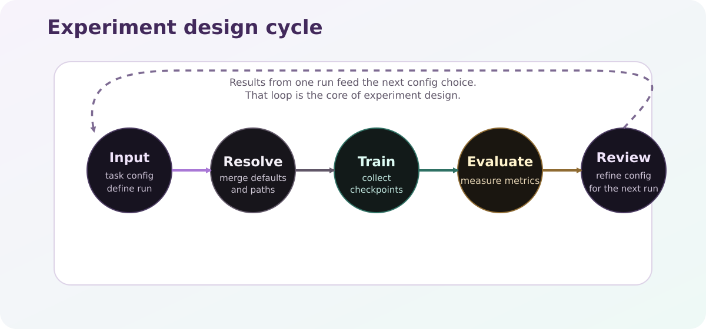

Experiment Design¶
Running RL well is not just about launching train. It is about choosing a sensible setup, controlling stochasticity, and measuring outcomes in a way that can be trusted.
{kind=link}

Reliable RL experiments follow a cycle: configure, validate, train, evaluate, and inspect artifacts.¶
Start With A Good Experiment Loop¶
For most students, the best workflow is:
define the task and baseline config
run
resolveto inspect the merged setuprun
checkto validate environment and model constructionrun the real task such as
trainevaluate with fixed settings and comparable metrics
inspect artifacts, seeds, and failure cases before drawing conclusions
That order matters because many experiment mistakes are not algorithm mistakes. They are setup mistakes, evaluation mistakes, or comparison mistakes.
What You Are Actually Optimizing¶
For trainable RL algorithms, the high-level optimization target is usually the expected discounted return,
but a good experiment is not the same thing as a high return on one run.
A good experiment also needs:
controlled seeds
a clear task definition
fixed evaluation settings
output artifacts that can be inspected afterwards
For imitation-learning methods such as behavior cloning, the training objective is different, but the research standard is the same: compare methods under controlled seeds, comparable scenarios, and clearly defined evaluation metrics.
Make The Core Decisions First¶
Before tuning details, make sure these choices are clear.
1. Environment, task, algorithm, and run name¶
Key |
Why it matters |
|---|---|
|
defines the task family and runtime path |
|
selects the variant and often changes difficulty or objective |
|
determines the learning algorithm and training assumptions |
|
comes from the control-file name and defines the output structure |
This block answers the most basic question: what exactly are you comparing?
If this part is vague, the rest of the experiment will also be vague. Before changing timesteps, reward weights, or wrappers, make sure you can describe the task, the algorithm family, and the comparison goal in one or two sentences.
2. Reproducibility and comparison setup¶
Key |
Why it matters |
|---|---|
|
separates algorithm quality from random luck |
number of seeds |
affects statistical confidence |
evaluation sets |
determines whether you compare on train, val, or test behavior |
ProcGen split choices |
determines whether generalization claims are meaningful |
If the split or seed policy changes across runs, the comparison is already weak before training even starts.
This is one of the easiest places to make accidental mistakes. Many apparent improvements disappear once the same method is tested across more seeds or across a cleaner train/val/test split.
3. Training scale¶
Key |
Why it matters |
|---|---|
|
controls total interaction budget |
|
changes throughput and sometimes learning dynamics |
|
changes episode horizon and effective difficulty |
|
controls how often progress is measured |
|
affects noise in intermediate evaluation |
These settings shape how much evidence you collect during training.
They also shape how expensive the experiment becomes. A very small run may be enough for a smoke test, but not enough to support a serious research conclusion. It helps to say explicitly whether a run is a structural check or a real experiment.
4. Observation and reward processing¶
Key |
Why it matters |
|---|---|
|
changes temporal context |
|
can stabilize learning when scales vary |
|
changes reward magnitude and variance |
|
deliberately alters the observation channels |
reward design |
often matters more than algorithm choice |
|
decides whether offline datasets preserve raw rollout data |
These settings are powerful, but they can also make comparisons unfair if one run sees a meaningfully different observation surface than another.
That is why it helps to treat reward shaping, normalization, frame stacking, and observation editing as explicit design decisions rather than as harmless technical details. Even small changes here can alter what the learner sees and how difficult the task becomes.
5. Evaluation quality¶
Key |
Why it matters |
|---|---|
|
determines confidence in reported results |
|
decides what “good” means |
|
makes comparisons more honest |
|
decides whether to reuse existing monitor files |
success/info fields |
determine which metrics can be computed consistently |
Evaluation is not a small post-processing step. It is part of the experiment design.
In practice, this means you should decide early what counts as success. If one run is judged by reward only and another by success rate or constraint violations, the results will be hard to interpret even if both runs completed correctly.
If You Use Datasets Or Behavior Cloning¶
CTRL-P also supports dataset-driven workflows, so experiment design does not stop at online RL.
Key |
Why it matters |
|---|---|
|
names the dataset you will later compare or reuse |
|
determines which scenario splits contribute demonstrations |
|
changes the style and consistency of demonstrations |
|
controls which collected datasets are transformed |
BC dataset choice |
strongly affects imitation quality and bias |
For behavior cloning or offline workflows, you should also ask:
do the demonstrations actually solve the task well?
do train and evaluation scenarios come from the same distribution?
does the dataset preserve the raw signals needed for preprocessing?
are imitation errors caused by weak data coverage rather than model capacity?
This deserves separate attention because offline workflows can fail for reasons that do not appear in online RL. A poor dataset can make a good model look weak, while a very narrow dataset can make a weak model look better than it really is.
How To Read Results Well¶
Do not rely on a single scalar score alone.
For repeated runs, it helps to summarize results with at least a mean and spread estimate:
where \(x_i\) is the result from one seed and \(s\) is the sample standard deviation.
In practice, inspect:
reward trend over time
episode length
success rate
robustness across seeds
behavior during demos or rollouts
dataset quality if using offline workflows
The key habit is simple: do not trust a run until you have looked at both the numbers and the artifacts.
This is especially important in CTRL-P-style projects, where visual behavior, scenario-specific failures, and rollout traces often reveal problems that a single summary score hides.
Common Failure Modes¶
The most common mistakes are usually not subtle:
too few seeds
reward shaping that rewards shortcuts
comparing runs with different horizons or wrappers
reporting only best-case checkpoints
changing several parameters at once without a baseline
claiming generalization without controlling ProcGen or dataset splits
training behavior cloning on weak or inconsistent demonstrations
forgetting that normalization and frame stacking can change what the learner sees
Most of these problems are avoidable if the experiment is kept narrow at first. Start with one clear baseline, one change at a time, and one evaluation setup that stays fixed while you compare methods.
Advanced Topics In CTRL-P¶
These topics matter once the basic experiment loop is already solid.
ProcGen-aware evaluation¶
When built-in environments use ProcGen, evaluation is not only about replaying the same policy on the same task name.
You also need to ask:
which scenario generator was used
whether train, val, and test scenarios differ
whether a model is robust to scenario changes or only memorizes one distribution
That is why ProcGen belongs in experiment design, not only in file layout documentation.
Behavior cloning as a research baseline¶
Behavior cloning is especially useful in CTRL-P when you want to compare:
rule-based expertise versus learned online policies
data efficiency of imitation versus RL
whether a heuristic contains enough signal to be distilled into a trainable policy
A good BC experiment usually needs:
a clearly documented source of demonstrations
a train/val/test split for the dataset
the same downstream evaluation surface used for RL agents
Fair comparisons across algorithm families¶
CTRL-P makes it easy to compare heuristics, RL, and imitation methods under the same runtime.
That is powerful, but only if the comparison is fair. In practice, fairness usually means:
same environment and task definition
same or clearly justified scenario split
same evaluation metrics
transparent reporting of whether a method used online interaction, demonstrations, or both
Why CTRL-P Uses resolve And check¶
These tasks exist because many experiment failures are avoidable configuration failures.
resolvehelps you inspect the merged configuration before spending computecheckconfirms that the environment and model can actually be built
That makes the experiment loop safer, faster to debug, and easier to teach.